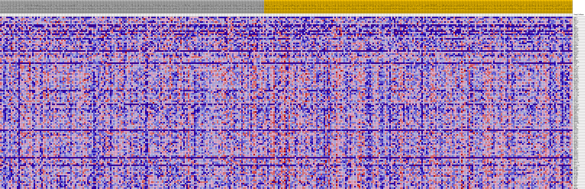
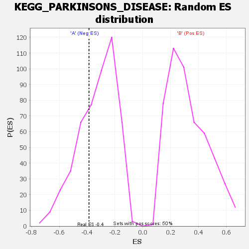

| | | Dataset | my.my.cls#B_versus_A.my.cls#B_versus_A_repos |
| Phenotype | my.cls#B_versus_A_repos |
| Upregulated in class | A |
| GeneSet | KEGG_PARKINSONS_DISEASE |
| Enrichment Score (ES) | -0.3868104 |
| Normalized Enrichment Score (NES) | -1.1775446 |
| Nominal p-value | 0.326 |
| FDR q-value | 0.5137786 |
| FWER p-Value | 0.977 |
Table: GSEA Results Summary
 Fig 1: Enrichment plot: KEGG_PARKINSONS_DISEASE
Fig 1: Enrichment plot: KEGG_PARKINSONS_DISEASE
Profile of the Running ES Score & Positions of GeneSet Members on the Rank Ordered List
| SYMBOL | TITLE | RANK IN GENE LIST | RANK METRIC SCORE | RUNNING ES | CORE ENRICHMENT | | 1 | UCHL1 | na | 1932 | 0.112 | -0.0147 | No |
| 2 | UBA1 | na | 2429 | 0.106 | -0.0050 | No |
| 3 | UBE2L3 | na | 2981 | 0.101 | 0.0027 | No |
| 4 | COX7A1 | na | 3157 | 0.099 | 0.0168 | No |
| 5 | PARK7 | na | 3237 | 0.099 | 0.0325 | No |
| 6 | TH | na | 4681 | 0.088 | 0.0222 | No |
| 7 | GPR37 | na | 5153 | 0.085 | 0.0286 | No |
| 8 | NDUFA8 | na | 6965 | 0.075 | 0.0095 | No |
| 9 | UBE2L6 | na | 7183 | 0.074 | 0.0184 | No |
| 10 | COX6A2 | na | 8997 | 0.066 | -0.0022 | No |
| 11 | PINK1 | na | 9351 | 0.065 | 0.0027 | No |
| 12 | SNCAIP | na | 10713 | 0.059 | -0.0111 | No |
| 13 | NDUFS6 | na | 11186 | 0.057 | -0.0095 | No |
| 14 | UBE2G1 | na | 11575 | 0.056 | -0.0067 | No |
| 15 | SLC18A2 | na | 12016 | 0.054 | -0.0051 | No |
| 16 | SLC25A4 | na | 14071 | 0.047 | -0.0333 | No |
| 17 | HTRA2 | na | 15180 | 0.043 | -0.0454 | No |
| 18 | COX4I2 | na | 15457 | 0.043 | -0.0429 | No |
| 19 | NDUFB4 | na | 15467 | 0.042 | -0.0357 | No |
| 20 | SNCA | na | 15598 | 0.042 | -0.0307 | No |
| 21 | NDUFB3 | na | 15778 | 0.042 | -0.0267 | No |
| 22 | NDUFA1 | na | 16178 | 0.040 | -0.0267 | No |
| 23 | SLC18A1 | na | 16348 | 0.040 | -0.0228 | No |
| 24 | NDUFA5 | na | 16864 | 0.038 | -0.0253 | No |
| 25 | UQCRC2 | na | 18334 | 0.034 | -0.0453 | No |
| 26 | LRRK2 | na | 19153 | 0.032 | -0.0543 | No |
| 27 | UBE2G2 | na | 19322 | 0.031 | -0.0518 | No |
| 28 | UBB | na | 21319 | 0.026 | -0.0827 | No |
| 29 | NDUFB2 | na | 22128 | 0.024 | -0.0928 | No |
| 30 | NDUFB10 | na | 22935 | 0.022 | -0.1033 | No |
| 31 | COX8C | na | 23271 | 0.021 | -0.1056 | No |
| 32 | SDHC | na | 23280 | 0.021 | -0.1021 | No |
| 33 | SLC25A6 | na | 23752 | 0.020 | -0.1071 | No |
| 34 | COX6B1 | na | 25174 | 0.016 | -0.1294 | No |
| 35 | UBE2J2 | na | 26630 | 0.012 | -0.1530 | No |
| 36 | NDUFV3 | na | 28057 | 0.009 | -0.1768 | No |
| 37 | COX7B | na | 28711 | 0.007 | -0.1871 | No |
| 38 | MT-ND2 | na | 28770 | 0.007 | -0.1869 | No |
| 39 | NDUFA4 | na | 29360 | 0.006 | -0.1963 | No |
| 40 | NDUFB8 | na | 29954 | 0.004 | -0.2061 | No |
| 41 | COX7A2L | na | 33418 | -0.004 | -0.2666 | No |
| 42 | MT-ND1 | na | 33498 | -0.005 | -0.2672 | No |
| 43 | NDUFAB1 | na | 33635 | -0.005 | -0.2688 | No |
| 44 | NDUFA7 | na | 33642 | -0.005 | -0.2681 | No |
| 45 | UQCR10 | na | 33842 | -0.005 | -0.2707 | No |
| 46 | CASP9 | na | 34770 | -0.008 | -0.2857 | No |
| 47 | NDUFA6 | na | 36425 | -0.012 | -0.3129 | No |
| 48 | MT-ND4L | na | 36795 | -0.013 | -0.3172 | No |
| 49 | COX6B2 | na | 37235 | -0.014 | -0.3226 | No |
| 50 | SLC25A5 | na | 37357 | -0.014 | -0.3222 | No |
| 51 | MT-CO3 | na | 37650 | -0.015 | -0.3248 | No |
| 52 | MT-ATP8 | na | 38053 | -0.016 | -0.3291 | No |
| 53 | COX5B | na | 38231 | -0.017 | -0.3294 | No |
| 54 | COX6A1 | na | 39752 | -0.021 | -0.3527 | No |
| 55 | NDUFS1 | na | 39954 | -0.021 | -0.3526 | No |
| 56 | MT-ND4 | na | 40002 | -0.021 | -0.3497 | No |
| 57 | VDAC2 | na | 40963 | -0.024 | -0.3625 | No |
| 58 | COX6CP3 | na | 41252 | -0.025 | -0.3633 | No |
| 59 | NDUFS8 | na | 41502 | -0.025 | -0.3633 | No |
| 60 | NDUFB7 | na | 42796 | -0.029 | -0.3811 | Yes |
| 61 | NDUFA4L2 | na | 42928 | -0.030 | -0.3783 | Yes |
| 62 | UQCRFS1 | na | 43262 | -0.031 | -0.3788 | Yes |
| 63 | SDHB | na | 43439 | -0.031 | -0.3765 | Yes |
| 64 | NDUFA3 | na | 43509 | -0.032 | -0.3722 | Yes |
| 65 | VDAC3 | na | 43815 | -0.032 | -0.3720 | Yes |
| 66 | NDUFS4 | na | 44127 | -0.033 | -0.3717 | Yes |
| 67 | NDUFA9 | na | 44405 | -0.034 | -0.3707 | Yes |
| 68 | NDUFS5 | na | 44890 | -0.036 | -0.3731 | Yes |
| 69 | NDUFB9 | na | 45003 | -0.036 | -0.3688 | Yes |
| 70 | MT-ATP6 | na | 45376 | -0.037 | -0.3689 | Yes |
| 71 | PPID | na | 45702 | -0.038 | -0.3680 | Yes |
| 72 | NDUFA2 | na | 46057 | -0.040 | -0.3674 | Yes |
| 73 | SDHA | na | 46194 | -0.040 | -0.3628 | Yes |
| 74 | NDUFB6 | na | 46887 | -0.043 | -0.3677 | Yes |
| 75 | SLC6A3 | na | 47651 | -0.045 | -0.3733 | Yes |
| 76 | MT-CO2 | na | 48088 | -0.047 | -0.3728 | Yes |
| 77 | NDUFS2 | na | 48878 | -0.050 | -0.3781 | Yes |
| 78 | VDAC1 | na | 48935 | -0.051 | -0.3703 | Yes |
| 79 | UQCR11 | na | 49025 | -0.051 | -0.3630 | Yes |
| 80 | MT-CYB | na | 49371 | -0.052 | -0.3600 | Yes |
| 81 | COX8A | na | 50424 | -0.057 | -0.3687 | Yes |
| 82 | NDUFC2 | na | 50428 | -0.057 | -0.3588 | Yes |
| 83 | MT-ND3 | na | 50569 | -0.058 | -0.3512 | Yes |
| 84 | NDUFV1 | na | 50617 | -0.058 | -0.3419 | Yes |
| 85 | NDUFB1 | na | 51097 | -0.061 | -0.3399 | Yes |
| 86 | UBE2J1 | na | 51192 | -0.061 | -0.3309 | Yes |
| 87 | SDHD | na | 51788 | -0.065 | -0.3301 | Yes |
| 88 | COX4I1 | na | 52342 | -0.068 | -0.3281 | Yes |
| 89 | UQCRC1 | na | 52499 | -0.069 | -0.3188 | Yes |
| 90 | NDUFB5 | na | 52674 | -0.071 | -0.3097 | Yes |
| 91 | NDUFS3 | na | 52797 | -0.072 | -0.2994 | Yes |
| 92 | MT-CO1 | na | 52905 | -0.072 | -0.2887 | Yes |
| 93 | COX7B2 | na | 53203 | -0.075 | -0.2810 | Yes |
| 94 | NDUFS7 | na | 53312 | -0.076 | -0.2698 | Yes |
| 95 | COX7A2 | na | 53565 | -0.078 | -0.2608 | Yes |
| 96 | NDUFA10 | na | 53621 | -0.078 | -0.2482 | Yes |
| 97 | UBA7 | na | 54161 | -0.084 | -0.2432 | Yes |
| 98 | SLC25A31 | na | 54345 | -0.086 | -0.2315 | Yes |
| 99 | UQCRQ | na | 54521 | -0.089 | -0.2192 | Yes |
| 100 | NDUFC1 | na | 54567 | -0.089 | -0.2045 | Yes |
| 101 | MT-ND5 | na | 54747 | -0.092 | -0.1917 | Yes |
| 102 | COX7C | na | 55013 | -0.097 | -0.1797 | Yes |
| 103 | UQCRHL | na | 55038 | -0.097 | -0.1632 | Yes |
| 104 | MT-ND6 | na | 55091 | -0.098 | -0.1471 | Yes |
| 105 | CASP3 | na | 55148 | -0.099 | -0.1309 | Yes |
| 106 | UQCRB | na | 55200 | -0.100 | -0.1144 | Yes |
| 107 | COX6C | na | 55260 | -0.101 | -0.0979 | Yes |
| 108 | COX5A | na | 55370 | -0.104 | -0.0818 | Yes |
| 109 | APAF1 | na | 55443 | -0.105 | -0.0648 | Yes |
| 110 | CYC1 | na | 55539 | -0.108 | -0.0478 | Yes |
| 111 | NDUFV2 | na | 55895 | -0.118 | -0.0336 | Yes |
| 112 | CYCS | na | 56191 | -0.133 | -0.0158 | Yes |
| 113 | UQCRH | na | 56222 | -0.135 | 0.0071 | Yes |
Table: GSEA details [plain text format]

Fig 2: KEGG_PARKINSONS_DISEASE
Blue-Pink O' Gram in the Space of the Analyzed GeneSet

Fig 3: KEGG_PARKINSONS_DISEASE: Random ES distribution
Gene set null distribution of ES for KEGG_PARKINSONS_DISEASE